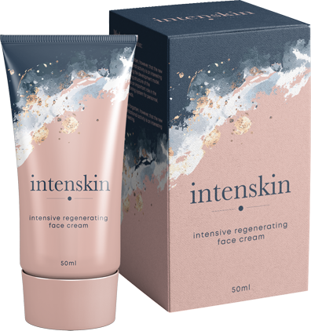
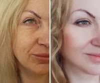

Vorher habe ich mich mit Komplexen gequält. Und jetzt? Ich bin um 15 Jahre verjüngt und habe einen
richtigen Kick bekommen! Ich gehe raus, treffe Leute. Mein Leben hat wieder Farben angenommen.
Katharina
Romrod
ES IST GROSSARTIG. Endlich habe ich eine glatte Haut und ich muss keinMake-Up anspachteln, um irgendwie
auszusehen ... Ich fühle, dass ich mehr Energie und Optimismus habe. Ich würde empfehlen!
Monika
Hamburg
Faltiger Hals, böse Furchen und graue, trockene Haut haben mir die ganze Freude meines Lebens
genommen... Aber das ist Vergangenheit! Dank sehe ich jünger aus - als
wäre ich wieder 30 Jahre alt.
Martina
Linden
Diese Kur hat mich vor den Komplexen gerettet! Ich gehe nicht mehr zum Botox, weil ich keine Falten
habe. Große Erleichterung!
Anne
Stuttgart
Wissen Sie was mir am besten gefällt? Dass nicht nur wirkt, sondern
auch 100% natürlich ist. Es verursacht keine Nebenwirkungen und ist absolut sicher. Die Welt kennt
keinen besseren Weg, um die Haut zu verjüngen.
Inge
Rabenau
Meine Nachbarin hatte recht! Diese Formel kehrt die Zeit buchstäblich um! Keine Falten und keine
Schande mehr.
Gisela
Mannheim
HAUT GLATT WIE SEIDE IN 21 TAGEN!
Ein solcher Effekt der Behandlung
wurde von meiner Frau erzielt, deren Gesicht mit tiefen Narben entstellt war... Ihre Falten und
Unvollkommenheiten werden noch schneller verschwinden!
Hallo!
Mein Name ist Kenzo Sakura und ich bin Wissenschaftler und Hauptspezialist für Molekulargenetik am
Institut für Biotechnologie in Tokio (Japan). Vor einem Jahr habe ich eine einfach zu verwendende und
hochwirksame auro-dermale Lifting-Formel erfunden. Dank ihr wurden schon 312 Tausend Freiwillige
(einschließlich meiner geliebten Frau) ein für alle Mal von allen Unvollkommenheiten der Haut
befreit (Falten, schlaffe Haut, Narben, Besenreiser, Flecken, Ringe und dunkle Augenränder sowie
31 andere Arten von Unvollkommenheiten).
Deshalb, wenn Sie genug haben:
von tatloser Beobachtung, wie Sie immer mehr Falten jedes Jahr haben – und Sie sich mit
Sehnsucht und Bitterkeit an die Zeiten erinnern, als Sie ein junges, glattes und strahlendes Gesicht
im Spiegel sahen;
von Auftragen einer dicken Schicht Make-up – um Falten, Ringe und dunkle Augenränder sowie
grauen Hautton zu verbergen;
von Ausgaben für Dutzende ineffektive Kosmetika – weil die Anzeigen Ihnen sagen, dass Sie eine
andere Creme für den Tag, eine andere für die Nacht, eine andere für Falten, eine andere für die Augen
usw. benötigen...
...lesen Sie unbedingt die
Nachricht, die ich Ihnen geben möchte!
Jetzt können Sie schnell, einfach und diskret alle Falten entfernen. Denken Sie, dass Sie bald Ihr
jugendliches Aussehen Ihrer Haut wiederherstellen werden, ohne Ihr Badezimmer zu verlassen. Ohne
Geld für ineffektive Kosmetika auszugeben, ohne Zeit mit dem Studieren der Inhaltsstoffe zu
verschwenden, ohne unters Messer zu gehen.
Dies ist möglich, weil ich eine revolutionäre auro-dermale Formel erfunden habe, die die Haut um 15,
20 oder sogar 25 Jahre verjüngt. Dadurch werden alle Falten geglättet und Unvollkommenheit der
Haut beseitigt, und das Gesicht erhält ein für alle Mal ein schönes, junges und gesundes Aussehen.
Alles begann mit einem tragischen Ereignis, aufgrund dessen...
Meine Frau beinahe gestorben bin
An diesem Tag kaufte ich meiner Frau Michiko rote Rosen. – Aus welchem Anlass? – lachte sie
überrascht – kann ich meiner Frau nicht ohne Anlass Blumen schenken? – antwortete ich und küsste sie auf
die Stirn. Michiko verdient alle Blumen dieser Welt. Sie ist eine Schatzfrau. Immer lächelnd, warm und
verständnisvoll. Die beste Mutter unserer 5-jährigen Tochter Yumi.
Michiko und Yumi während ihres sorglosen Spiels am Tag vor dem Vorfall,
der das Leben unserer Familie in einen Alptraum verwandelte
Einen Moment später verabschiedeten wir uns, weil ich zu einem Treffen gehen musste. Ich beobachtete
meine Frau, als sie freudig die Straße entlang ging. Und plötzlich sind zwei Männer mit Kapuzen vor ihr
aufgetaucht.
Das waren Sekunden. Einer der Männer wollte Michikos Handtasche greifen. Meine Frau versuchte sich zu
verteidigen. Ich sah ein Messer blitzen.
Als ich dort ankam, waren die Männer weg und meine Frau lag auf dem Bürgersteig. Ihr Gesicht war im
Blut. Eine Menge versammelte sich um sie. Rote Rosenblätter schwebten in der Luft...
Diese Diagnose war wie ein Urteil
für sie
− Lassen Sie es mich klarstellen – Ihre Frau wird dies heil überstehen, aber ihr Gesicht wird tiefe
Narben haben – sagte der Arzt unverblümt, als wir im Krankenhaus ankamen. Wenn das Messer des Angreifers
einen Zentimeter tiefer ging, könnte sie tot sein.
Die Banditen entstellten am
helllichten Tag das Gesicht meiner Frau. Und warum? Für eine Summe, für die wie nicht einmal eine Packung
Zigaretten kaufen können.
– Was Narben bedeuten! Das Wichtigste ist, dass Michiko unversehrt und gesund ist – dachte ich naiv auf
dem Weg zu ihrem Saal.
Als ich das Zimmer meiner Frau betrat, fand ich sie in Tränen. Michiko sprach kaum. Nach jedem Wort,
das sie aussprach, verzog sich ihr Gesicht zu einem finsteren Ausdruck qualvollen Schmerzes.
− Hast du gehört? Ich werde für den Rest meines Lebens wie ein Alptraum aussehen! – flüsterte sie
zitternd. Dann umarmte ich sie fest und sagte ein paar ermutigende Worte, um sie zu beruhigen.
Als ich jedoch das Zimmer meiner Frau verließ, brach etwas in mir zusammen. Ich sank auf den
Stuhl im Korridor und begann wie ein kleines Kind zu schluchzen. Es waren Tränen des Zorns und der
Hilflosigkeit. Sie hat es nicht verdient! Und ich konnte nichts tun, um ihr zu helfen...
− Ich bin ein Monster! – schrie sie
mit Tränen in den Augen
Michiko kam alle in Bandagen nach Hause. Die Wunden brauchten mehrere Monate, um zu heilen, und
hinterließen, wie der Arzt vorausgesagt hatte, Narben. Die Frau wollte mutig sein. Sie versuchte, die
Narben mit Make-up zu bedecken und benutzte alle möglichen Salben und Cremes, die ich ihr gab. Aber die
Narben waren immer noch sichtbar.
Eines Nachts wurde ich vom Schrei unserer Tochter geweckt. Ich sprang auf und rannte in ihr Zimmer. Ich
habe ein herzzerreißendes Bild gesehen. Meine Frau versuchte weinende Tochter zu beruhigen und sie
machte sich mit aller Kraft los. – Lass mich Monster! – schrie meine Tochter. Es stellte sich
heraus, dass die Tochter einen schlechten Traum hatte, aber als sie ihre Mutter anrief, bekam sie noch
mehr Angst. Das vernarbte Gesicht meiner Frau machte unser kleines Mädchen hysterisch.
Seitdem hat sich meine Frau komplett zurückgezogen. Entmutigt hörte sie auf, sich um sich selbst zu
sorgen, deckte alle Spiegel im Haus ab, damit sie ihr Spiegelbild nicht sehen musste. Manchmal, wenn ich
nach Hause kam, saß sie auf der Couch und starrte mit einem leeren Gesichtsausdruck auf die Wand. Ich
sah mit Schmerz zu, wie meine geliebte Frau in maßlose Verzweiflung geriet.
Unsere Tochter hatte Angst vor den Narben im Gesicht ihrer Mutter
Wie habe ich "Hautjugendaktivator"
entdeckt?
Ich hatte genug von Tatenlosigkeit. Ich musste meine Frau von entstellenden Narben befreien und so
meiner Familie den Frieden zurückgeben. Ich bin Wissenschaftler und Spezialist für Genforschung.
Ich war an der Erfindung von Substanzen beteiligt, die führenden japanischen Kosmetikunternehmen
Einnahmen in Millionenhöhe einbrachten. Ich beschloss, all mein Wissen und meine jahrelange Erfahrung zu
nutzen, um eine Formel zu entwickeln, die die schöne, gesunde Haut meiner Frau ohne Narben
wiederherstellt.
Ich begann sofort mit meiner Forschung. Das Institut für Biotechnologie, an dem ich arbeite, verfügt
über eines der modernsten Labors der Welt. Wir testen die Kosmetika der weltweit größten Marken, bevor
sie auf den Markt gebracht werden.
6 Monate lang habe ich Kombinationen der stärksten natürlichen Substanzen ausprobiert. Mein Ziel war
es, eine Formel zu erstellen, die die automatische Hautregeneration aktiviert. Mit anderen
Worten: Ich wollte, dass meine Formel die Haut im Gesicht meiner Frau regeneriert und ihre frühere
Schönheit wiederherstellt. Es musste 100% sicher für die Gesundheit sein. Michikos Haut war bereits in
einem bedauerlichen Zustand und ich konnte sie keiner anderen Irritation aussetzen.
Ich habe hauptsächlich nachts gearbeitet, weil ich tagsüber meine beruflichen Pflichten erfüllen
musste. Nach so einem halben Jahr war ich ein menschliches Wrack. Ich hatte Angst, dass ich nicht
genug Kraft haben würde − dass mein Körper nach so vielen schlaflosen Nächten, ständigem Stress
und Anstrengung nicht in der Lage sein würde, dies zu ertragen.
Mir wurde immer öfter schwindelig, ich war atemlos, ich fühlte stechende Schmerzen hinter meinem
Brustbein. Eines Nachts, 6 Monate nach Beginn meiner Forschungen, landete ich beim Notdienst. Es stellte
sich heraus, dass ich vor dem Infarkt war. Ich habe meiner Frau nie davon erzählt.
Ich hatte jedoch das Gefühl, dem Erfolg immer näher zu kommen und konnte jetzt nicht aufgeben.
Der Ehering erwies sich als eine
Rettung
Ein Glücksfall hat mir geholfen. Nach vielen Stunden Arbeit im Labor fühlten sich meine Finger
geschwollen an. Ich wollte meinen Ehering abnehmen, weil es anfing zu schmerzen. Ich kämpfte eine Weile
damit... und ließ es direkt in die Substanz fallen, an der ich arbeitete!
Ich fluchte bitter - der Ring besteht aus 24 Karat Gold. Als Wissenschaftler wusste ich, dass Gold
die Wirkung jeder Substanz verändert, weil es ein starkes Reagenz ist. Es ist, als würde man fast
fertigen Konfitüren einen Esslöffel exotische Gewürze hinzufügen. Der Geschmack würde sich natürlich für
immer ändern. Gleiches gilt für Gold. Sein Einfluss kann nicht rückgängig gemacht werden.
Ich dachte alles wäre verloren. Meine Formel war fast fertig – und jetzt wird Gold ihre Wirkung ändern.
Und der ganze Prozess muss von Null an begonnen werden. Ich wusste, dass ich für die nächsten sechs
Monate der Forschung nicht genug Kraft haben würde.
Aber in diesem Moment geschah ein Wunder! Die Apparatur wurde verrückt. Ich schaute in das
Mikroskop. Die Formel begann endlich so zu wirken, wie sie sollte! Das Gold wirkte als Aktivator. Die
unter dem Mikroskop sichtbaren Hautzellen begannen selbstständig und automatisch Kollagen zu
produzieren. Es ist eine Substanz, die "Protein der Jugend" genannt wird, die unter anderem für das
jugendliche Aussehen der Haut verantwortlich ist.
Die unter dem Mikroskop sichtbaren
Zellen wurden buchstäblich "blitzschnell jünger".
Dann habe ich meine Formel mit Partikeln aus 24 Karat Gold angereichert. Dank dessen erhielt ich
Ergebnisse, von denen ich nie geträumt hatte. Es stellte sich heraus, dass die Formel die Haut nicht nur
von Narben, Muttermalen und Pusteln befreit. Aufgrund der Tatsache, dass es die automatische Produktion
von Kollagen stimuliert, kehrt es auch alle Zeichen des Alterns um. Ich verstand, dass ich
versehentlich das "Jugendserum" erfunden hatte, um meiner Frau zu helfen, entstellende Narben
loszuwerden.
− Du hast mir ein
neues Gesicht gegeben – sagte sie mit Tränen in den Augen
Meine Frau vertraute mir sehr und erklärte sich bereit, meine Formel buchstäblich "am eigenen Leibe"
auszuprobieren. Als ich ihr das Glas mit der Formel reichte, dankte sie mir mit einem Lächeln. Ich
konnte jedoch Müdigkeit und Unglaube in ihre Augen sehen. Sie hatte so viele unwirksame Substanzen
ausprobiert, dass sie jetzt nur noch Enttäuschung erwartete. Aber ich wusste, dass es diesmal
anders sein wird!
Nach ein paar Tagen sah ich ein Lächeln auf ihrem Gesicht – das erste seit mehreren Monaten. – Kenzo,
sieh mal, die Narben werden kleiner – sagte sie total zufrieden. Nach einer Woche sahen die kürzlich
schrecklichen Narben wie dünne weiße Linien aus.
Der 14. Tag war entscheidend. Die Narben sind fast vollständig verschwunden und alle Unvollkommenheiten
(feine Falten um die Augen, alte Aknenarben, geplatzte Venen) werden vollständig absorbiert. Nach 21
Tagen waren nicht einmal Spuren der Narben im Gesicht meiner Frau zu sehen. Ihr Gesicht war
makellos – genau wie das eines unschuldigen Kindes. Meine Frau strahlte.
Sie wollte das Haus verlassen und erneuerte die Kontakte zu ihren Freunden. Sie hörte überhaupt auf,
Make-up zu tragen. Sie musste ihr Aussehen nicht verbessern - ihre Haut war perfekt und brauchte keine
Verbesserer.
− Mama, du hast ein Gesicht so schön wie ein Engel – sagte unsere Tochter eines Abends und
streichelte Michikos Gesicht mit ihrer kleinen Hand. Meine Frau sah mich dann mit einer Dankbarkeit an,
die keine Worte ausdrücken konnten. Ich hatte das Gefühl, meine Aufgabe erfüllt zu haben.
Wir drei waren wieder glücklich
Eines Abends, einen Monat nach Anwendung der Formel, kam meine Frau mit einem ernsten Gesichtsausdruck
auf mich zu:
− Ich habe heute meine Mutter getroffen. Sie ist in den letzten Jahren schrecklich gealtert. Und der
Angriff auf mich fügte weitere 10 Jahre hinzu... Sie ist furchtbar deprimiert und sagt, „sie sieht aus
wie ein alter, faltiger Apfel”.
– Ich weiß, dass du diese Formel nur für mich erfunden hast. Aber denk darüber nach – du könntest auch
meiner Mutter und Hunderten anderer Frauen helfen. Kenzo, du kannst diese Formel nicht vor der Welt
verbergen. Es wäre eine Sünde der Vernachlässigung!
Michiko hatte Recht – ich konnte eine so bahnbrechende Erfindung für mich nicht behalten. Ich
beschloss, mein Bestes zu geben, um meine Formel so vielen Frauen wie möglich zur Verfügung zu stellen.
Ich habe die Entdeckung für groß angelegte Forschungen angemeldet.
5 der wichtigsten Forschungslabors aus der ganzen Welt (USA, Kanada, Europa, China und Japan)
bestätigten die höchste Wirksamkeit meiner Formel. Ich habe sie unter dem Namen patentiert:
auro-dermale Formel .
beseitigt 98,9% der Falten und kehrt das biologische Alter der Haut um 15, 20 oder sogar 25 Jahre um
Ich wollte, dass meine Erfindung einfach zu verwenden ist, damit möglichst viele Frauen sie benutzen
können. Deshalb habe ich sie in Form einer Lifting-Formel mit der Konsistenz einer kondensierten Creme
verschlossen. Es reicht, die Formel jeden Morgen und Abend aufs Gesicht aufzutragen und zu
beobachten, wie die Falten und Unvollkommenheiten über Nacht verschwinden.
Nur 2 Minuten nach dem Auftragen der auro-dermalen Lifting-Formel ,
wird die natürliche Fähigkeit Ihrer Haut angeregt, Kollagen zu produzieren. Bereits nach dem ersten
Gebrauch werden Sie feststellen, dass die Haut straffer ist und die darauf sichtbaren Falten
buchstäblich "absorbiert" werden.
Frauen, die meine auro-dermale Formel verwenden, beschreiben ihre Wirkung oft mit dem Wort „Zauber”. In
der Tat mag es auf den ersten Blick so erscheinen. Es kann vorkommen, dass Sie die Formel auftragen und
dann in die Küche gehen, um das Mittagessen zuzubereiten. Wenn Sie nach einigen Stunden erneut in den
Spiegel schauen, haben Sie möglicherweise den Eindruck, dass jemand buchstäblich Falten aus Ihrem
Gesicht entfernt hat.
Viele Frauen erleben dieses Gefühl. Damen schreiben mir, dass sie in wenigen Stunden Falten beseitigt
haben, an die sie seit Jahren gewöhnt waren. "Raucher"-Falten um den Mund, "Löwenfalten" zwischen den
Augenbrauen, Mimikfalten. Nach Anwendung der auro-dermalen Formel verschwinden alle diese
Unvollkommenheiten buchstäblich von Stunde zu Stunde.
Nach 21 Tagen mit der Formel werden Sie alle Falten, Pusteln,
Ringe und dunkle Augenränder sowie Flecken, Verfärbungen und matte, fahle Haut los. Ihr Gesicht
wird perfekt glatt, radikal gestrafft und strahlend wie das Gesicht einer 20-Jährigen. Sie werden sich
so fühlen, als ob Sie die Zeit zurückgedreht hätten, Sie werden mit Ihrem eigenen Aussehen zufrieden
sein und Sie werden stolz in den Spiegel schauen!
Nach 21 Tagen
Anwendung der auro-dermalen Formel :

WERDEN SIE VON TIEFEN FALTEN BEFREIT
ENTFERNEN SIE MIMIKFALTEN
STAFFEN SIE DIE HAUT RADIKAL
BEKOMMEN SIE EINE STRAHLENDE HAUT
BESEITIGEN SIE FLECKEN UND VERFÄRBUNGEN
WERDEN SIE DUNKLE AUGENRÄNDER UND RINGE LOS
Solche Ergebnisse wurden von der Kontrollgruppe von 312 Tausend Frauen aus aller Welt, jeden
Alters, aller Hautfarben und Hauttypen erhalten. Unabhängig davon, ob Sie 29 oder 89 Jahre alt
sind, ob Ihre Haut trocken und geschädigt oder fettig und anfällig für Pickel ist - meine auro-dermale
Formel stellt die perfekte Glätte, Festigkeit und Glanz wieder her.
Auch wenn Sie zuvor noch keine Cremes oder Masken verwendet haben, auch wenn Sie rauchen und
sich gerne sonnen, auch wenn Sie die Hoffnung längst verloren haben, jemals wieder zu Ihrer früheren
Schönheit zurückzukehren. Wissen Sie, dass Sie in 21 Tagen alle Falten entfernen und alle mit Ihrem
makellosen, jugendlichen Teint bezaubern werden, der frei von Unvollkommenheiten ist.
Warum ist meine auro-dermale Formel
so effektiv?
Aufgrund der Wirkung meiner auro-dermalen Formel treten komplexe
Regenerationsprozesse in der Haut auf. Ohne jedoch auf Details einzugehen, werde ich die
Wirkungsweise in wenigen einfachen Worten erläutern.
Haben Sie sich jemals gefragt, warum junge Menschen sich keine Sorgen um Falten machen müssen und warum
ihre Haut immer fest, glatt und strahlend ist? Es ist alles dank einer Substanz – Kollagen
Kollagen ist eine Art „Jugend-Serum”, das Ihr Körper selbst produzieren kann. Leider produziert
Ihr Körper mit zunehmendem Alter immer weniger davon. Nach dem 60. Lebensjahr verschwindet die
Kollagenproduktion vollständig und die Haut verliert ihre natürliche Glätte, Festigkeit und ihren Glanz.
Es gibt Falten, hängende Wangen, Flecken und Verfärbungen.
Auf dem Markt finden Sie Dutzende Produkte mit Kollagen, die versprechen, Ihrer Haut wieder
Jugendlichkeit zu verleihen. Wenn Sie Ihr Gesicht jedoch mit Kollagencreme einreiben oder sogar Kapseln
schlucken, die diesen Inhaltsstoff enthalten, füllen Sie seinen Mangel in der Haut nicht wieder auf.
Es ist, als würde man versuchen, die Haut mit Feuchtigkeit zu versorgen, indem man Wasser über das
Gesicht gießt. Es würde nur Ihre Haut schädigen. Darüber hinaus – wahrscheinlich würde die Haut
von einer solchen Behandlung noch trockener und gereizter werden. Ähnlich sieht es bei dem Kollagen aus,
das in verschiedenen Cremes, Kapseln und Pflastern enthalten ist.
Die Wahrheit ist, dass Sie die Jugend Ihrer Haut nicht wiederherstellen können, indem Sie sie von außen
mit Kollagen versorgen. Es ist nur eine Verschwendung von Zeit und Geld. Es ist, als würde man Wasser
über das Gesicht gießen. Um einen jungen, glatten und strahlenden Teint wiederzugewinnen, muss die
natürliche Fähigkeit der Haut, Kollagen zu produzieren, wiederhergestellt werden.
So wirkt meine auro-dermale Formel . Dank der einzigartigen
Kombination von Wirkstoffen, angereichert mit 24 Karat Gold, regt sie jede Hautzelle an, automatisch
Kollagen zu produzieren. Dadurch gewinnt die Haut ihre natürliche Fähigkeit zur automatischen
Regeneration ein für alle Mal zurück und Sie müssen sich keine Sorgen mehr über Falten, schlaffe Haut im
Gesicht, Hals und Dekolleté, geplatzte Venen oder Verfärbungen machen.
VORHER
NACHHER
Haut, die kein Kollagen produzieren kann, mit Falten bedeckt, ohne Festigkeit und Glanz
Haut, die selbst Kollagen produziert, perfekt glatt, fest und strahlend
BESTÄTIGTE
WIRKSAMKEIT
Die revolutionäre Zusammensetzung meiner Formel ermöglicht es Ihnen, sogar Narben (wie es bei
meiner Frau der Fall war), sowie tiefe Falten und Hautfehler zu entfernen, für die es zuvor keinen
anderen Rat als eine plastische Chirurgie gab. Deshalb wurde meine auro-dermale Formel als „japanisches Jugendserum” genannt, und ich erhielt für meine
Entdeckung den Konfuzius-Preis (asiatisches Äquivalent zum Nobelpreis) auf dem Gebiet der Dermatologie.
Die wertvollste Belohnung für mich sind jedoch die Tausenden von Briefen aus der ganzen Welt,
die ich von Frauen erhalte, die bereits von meiner auro-dermalen Formel profitiert haben. Sie beschreiben außergewöhnliche Geschichten über ihre
Verwandlungen und schreiben, wie die Behandlung ihr Leben zum Besseren verändert hat. Lassen Sie mich
(natürlich mit Zustimmung der Autorin) einen Brief von Andrea aus Deutschland zitieren, die als eine der
Freiwilligen meine Formel getestet hat. Frau Andrea schreibt:
− Diese Behandlung hat mein Leben verändert! Vorher sah ich aus wie eine alte Dame. Tiefe Falten,
Augensäcke, schreckliche Flecken auf der ganzen Haut. Ich wollte nicht rausgehen, ich möchte, damit
Leute mich nicht sehen. Kinder auf dem Hof nannten mich „alte Hexe”. Und 21 Tage Dr. Sakuras
Behandlung waren genug und meine Haut ist glatt wie vor 30 Jahren. Plötzlich sahen mich die
Herren auf der Straße an. Bis mein Mann eifersüchtig wurde und sich wie in jungen Jahren erneut um
mich bemüht. Ich hätte einen Lebensfehler gemacht, wenn ich diese Behandlung nicht anwenden hätte. An
dieser Stelle möchte ich dem Arzt danken und ihm viel Erfolg bei seiner weiteren Arbeit wünschen!
Sie riskieren nichts!
Die auro-dermale Formel hat bereits Tausenden von Frauen geholfen,
sich von unschönen Falten zu befreien und die Jugend ihrer Haut ein für alle Mal wiederherzustellen. Es
ist eine weltweite Entdeckung mit nachgewiesener Wirksamkeit, die von der dreifachen
Zufriedenheitsgarantie abgedeckt ist: Echtheit, Qualität und Zufriedenheit.
Dreifache
Zufriedenheitsgarantie
Echtheitsgarantie – Sie können sicher sein, dass Sie das Originalprodukt erhalten, das nur über
diese Website erhältlich ist.
Qualitätsgarantie – aufgrund der fortschrittlichen Produktionsmethode erfüllt die auro-dermale
Formel die höchsten Qualitätsstandards. Alle Inhaltsstoffe der Formel
wurden gründlich getestet, was ihre 100% ige Sicherheit für die Gesundheit Ihrer Haut bestätigt.
Zufriedenheitsgarantie – zahlreiche Verbraucher- und wissenschaftliche Tests bestätigen die
höchste Wirksamkeit der auro-dermalen Formel .
ACHTEN Sie auf Fälschungen!
Nachdem ich meine auro-dermale Formel zur Verfügung gestellt hatte,
wurde der Markt buchstäblich mit verschiedenen Präparaten überflutet, die angeblich mit 24 Karat Gold
angereichert waren. Lassen Sie sich nicht täuschen! Die Verwendung von nicht bewährten Fälschungen
hilft Ihnen nicht nur nicht, Unvollkommenheiten der Haut zu beseitigen, sondern kann auch
gesundheitsschädlich sein!
Die Zusammensetzung meiner Formel wurde mit größter Sorgfalt entwickelt. Keiner der Inhaltsstoffe wurde
durch Zufall hier verschlossen. Es reicht nicht aus, einer zufälligen Mischung ungetesteter Rohstoffe
Gold hinzuzufügen, um Ihre Haut um 15, 20 oder 25 Jahre zu verjüngen. Wenn Sie also zu 100% sicher sein
möchten, dass Sie in 21 Tagen Falten entfernen – wählen Sie keine Fälschungen.
Jetzt können auch Sie in 21 Tagen
wieder einen seidenweichen, festen und strahlenden Teint erhalten
Lassen Sie sich von niemandem sagen, dass Sie ein ganzes Regal mit verschiedenen Cremes benötigen, um
Falten zu beseitigen. Oder schlimmer noch – dass Sie Ihr Gesicht unter ein chirurgisches Skalpell legen
müssen. Wissen Sie, dass Sie jetzt 98,9% aller Falten, Unvollkommenheiten und Verfärbungen
beseitigen und die perfekte Glätte, Festigkeit und Glanz der Haut wiederherstellen können.
Große kosmetische Unternehmen kämpfen buchstäblich um ein Patent für meine auro-dermale Formel . Mir wurden Verträge im Wert von Millionen angeboten, aber dafür habe ich
nicht die Formel erstellt. Mein Ziel ist es, so viele Frauen wie möglich von entstellenden
Unvollkommenheiten der Haut zu befreien, die ihr Selbstvertrauen stehlen und sie von ihren Lieben
isolieren. Ich möchte, dass jede Frau stolz darauf ist, wie sie aussieht – genau wie meine Frau
jetzt.
Ich habe alle Anstrengungen unternommen, um sicherzustellen, dass meine auro-dermale Formel so schnell wie möglich weltweit verfügbar ist. Schließlich kann ich stolz
verkünden, dass jetzt jede Frau davon profitieren und in 21 Tagen die perfekte Glätte ihrer Haut
wiederherstellen kann.
Deshalb ermutige ich Sie, diese Gelegenheit zu nutzen! Um die auro-dermale Formel zu erhalten, müssen Sie kein Geld online senden oder mit Karte bezahlen.
Füllen Sie einfach das Formular in 2 Minuten aus und nach einigen Tagen erhalten Sie ein Paket, dass Sie
bequem beim Kurier oder Postboten bezahlen.
Danke, dass Sie meine Geschichte gelesen haben. Ich hoffe, Sie erinnern sich eines Tages an diesen Tag
und denken, "es war der Tag, der mein Leben verändert hat".
Schöne Grüße!
Dr. Kenzo Sakura
Holen Sie sich für die Teilnahme am Rabattclub günstiger
Verfügbarkeit
in aktueller Partie:
002
Bestellen Sie heute und sparen Sie . Nachdem das Limit
von 200 Stück erreicht wird, läuft das Sonderangebot ab.

Ich sehe um 20 Jahre jünger aus!
Diese Behandlung wirkt Wunder! Ich konnte mich nicht mehr im Spiegel ansehen. Ich bin noch nicht so
alt und ich sah aus, als hätte mich das Leben buchstäblich umgepflügt... Und die Haut an meinem Hals,
es ist nicht der Rede wert! Wie beim Truthahn. Einmal vertraute ich meiner Cousine mein Problem an und
sie schlug die Lifting-Formel vor. Es dauerte nicht lange, um mich
zu überzeugen. Ich habe es verwendet – und ich konnte meinen Augen nicht trauen. Die Falten
verschwanden, als hätte ich einen Zaubertrank benutzt. Nach weniger als 3 Wochen ist keine mehr
übrig. Und mein Hals ist fest und glatt, als ob all diese Haut absorbiert worden wäre. Als ich
kürzlich Wein zum Abendessen kaufen wollte, bat mich die Dame im Laden um meinen Personalausweis.
Tatsächlich – ein tolles Gefühl. Ich empfehle es jeder Frau!
Ida Schulze,
46 Jahre, Dresden
Schnell und effektiv
Ich glaube nicht an Märchen und muss alles selbst überprüfen. Alle Nachbarinnen erzählten immer noch
über diese Behandlung, als wäre sie "das japanische Geheimnis der Jugend". – Ich werde es nicht
glauben, bis ich es sehe! – sagte ich und testete. Und ich sah! Ich bin nach der zweiten Woche der
Behandlung. Meine Haut ist glatt, als hätte jemand diese Falten buchstäblich gebügelt.Die
schreckliche Furche zwischen den Augenbrauen, die Falten an den Augenwinkeln und um den Mund sind
verschwunden. Ich habe das Gefühl, dass ich von Tag zu Tag jünger werde. Wenn es so weitergeht, wird
mein Mann mich eines Tages nicht wiedererkennen, wenn er nach Hause kommt. Empfehlenswert!
Eva Fuchs,
76 Jahre, Freiburg im Breisgau
Die einzige effektive Methode
Mein Enkel hat mir einmal gesagt – Oma, du siehst aus wie eine alte runzelige Schildkröte. Sie
wissen, es ist ein Kind, daher weiß es noch nicht, dass es nicht richtig ist, solche Dinge zu sagen.
Aber dann stellte ich fest, dass ich mich um mich selbst kümmern musste. Ich habe verschiedene Mittel
ausprobiert, die Falten entfernen sollten, aber sie haben mich nur viel Geld gekostet und nicht
geholfen. Endlich habe ich diese Formel gefunden. Ich dachte, wenn es sich um einen so guten Arzt
handelt, sollte ich es versuchen. Und es hat sich gelohnt! Jetzt fühle ich mich so, als hätte jemand
mir meine Jugend wieder gegeben. Alle Falten sind verschwunden, und die Haut fühlt sich angenehm
an, ist glatt, kurz gesagt, jung. Danke!
Simone Hartmann,
73 Jahre, Gelsenkirchen
Dies ist eine Chance für ein neues Leben für mich
Nach der Scheidung habe ich mich schrecklich vernachlässigt, ich hörte auf, mich um mich selbst zu
kümmern. Aber nach gewisser Zeit wollte ich einen Mann kennen lernen und mir die Chance geben,
glücklich zu sein. Ich habe einen Mann auf einer Dating-Seite getroffen. Wir haben viel miteinander
geschrieben und ich dachte, wir verstehen uns. Als wir uns jedoch "live" in einem Restaurant trafen,
entkam er, während ich auf der Toilette war. Ich weinte in mein Kissen, beschloss dann aber zu
handeln. Eine Arbeitskollegin hat diese Formel sehr empfohlen, also
bin ich ein Risiko eingegangen. Und nach 21 Tagen kann ich mich im Spiegel kaum wiedererkennen!
Meine Haut wurde wie Seide – glatt, samtweich, einfach schön. Ich bin zurzeit mit einem
außergewöhnlichen Mann zusammen und fühle mich glücklich.
Jasmin Berger,
56 Jahre, Bielefeld
Ein natürliches Heilmittel gegen Unvollkommenheiten
Meine Haut könnte als chemischer Detektor in Kosmetika verwendet werden. Denn wenn eine Creme oder
ein Gel die falsche Zusammensetzung hat, wird sie sofort rot, rau und trocken. Ich griff nach , um die Aknenarben loszuwerden, die mein Gesicht schrecklich schändeten.
Aber ich hatte Angst, dass es Narben entfernt, aber auch die Haut reizen könnte, da es eine so starke
Formel ist. Aber dem ist nicht so! Nach dem Auftragen der Formel war meine Haut immer perfekt mit
Feuchtigkeit versorgt und es riecht so gut, dass die Behandlung selbst ein reines Vergnügen war.
Und in weniger als einem Monat sind alle Narben verschwunden!